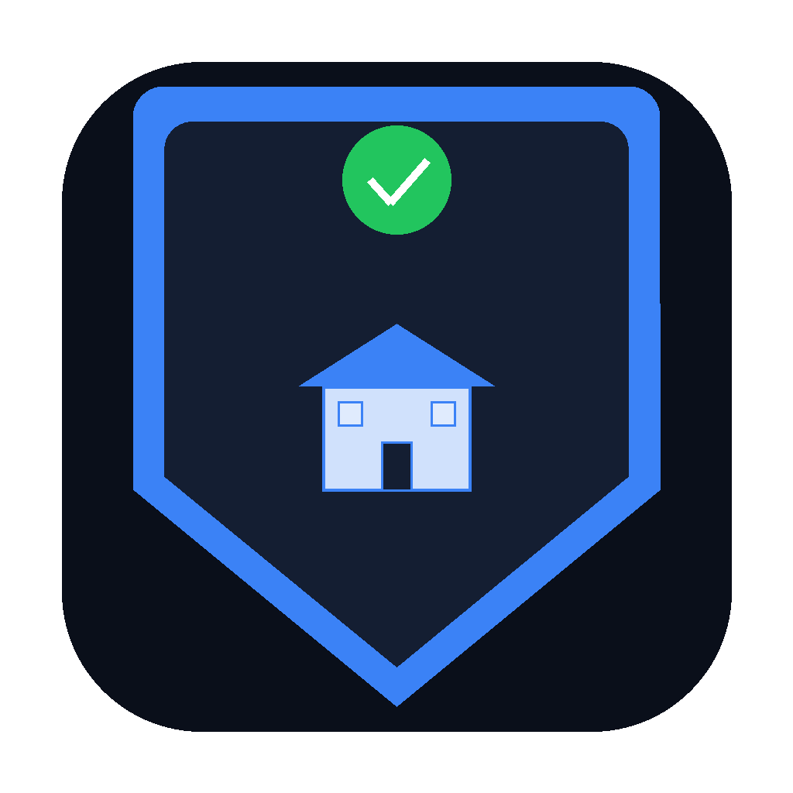

Covrd Privacy PolicyLast updated: March 16, 2026
Covrd ("we", "our", or "the app") is committed to protecting your privacy. This policy explains what data we collect, how we use it, and your rights regarding your personal information.
When you create an account, we collect your email address and an encrypted password. We use this solely for authentication purposes.
You may voluntarily enter information about your purchases, warranties, service contracts, home inventory items, and insurance policies. This includes product names, purchase dates, warranty expiration dates, retailer information, prices, serial numbers, contractor details, insurance policy details, and any notes you add. This data is stored securely and is only accessible to you.
You may upload photos of receipts, invoices, or other proof of purchase documents. These images are stored securely in encrypted cloud storage and are only accessible to you.
When you use the AI Assistant, your messages and relevant item data are sent to our AI provider (Anthropic) to generate responses. Conversations are stored to provide chat history functionality. Anthropic's data handling is governed by their own privacy policy.
We may collect basic device information such as device type, operating system version, and app version for the purpose of providing push notifications, crash monitoring, and improving app performance.
We collect anonymized usage data to understand how the app is used and improve the experience. This includes screen views, feature usage patterns, and general interaction data. This data is not tied to your personal identity.
We use your information to:
When you add a product and use the AI warranty lookup feature, anonymized product warranty information (product name, warranty length, coverage details) may be stored in a shared database to help other users get faster warranty information. This data is fully anonymized — no personal information, purchase details, or account data is included in the shared database.
Your data is stored securely using Supabase, which provides enterprise-grade security including:
We do not sell, rent, or share your personal data with third parties for marketing purposes.
Covrd uses the following third-party services:
Each third-party service has its own privacy policy governing their handling of data.
With your permission, we send push notifications to remind you about upcoming warranty expirations and important maintenance reminders. You can disable notifications at any time through your device settings or within the app's Settings screen.
You have the right to:
Covrd is not intended for use by children under the age of 13. We do not knowingly collect personal information from children. If you believe a child has provided us with personal information, please contact us and we will promptly delete it.
We retain your data for as long as your account is active. If you delete your account, all associated data is permanently removed from our servers within 30 days. Anonymized product warranty data in the shared database is retained to benefit all users. We may retain anonymized, aggregated analytics data for analytical purposes.
We may update this privacy policy from time to time. We will notify you of significant changes through the app or via email. Continued use of the app after changes constitutes acceptance of the updated policy.
If you have questions about this privacy policy or your data, contact us at:
Email: privacy@getcovrd.app
Website: getcovrd.app
© 2026 Covrd. All rights reserved.